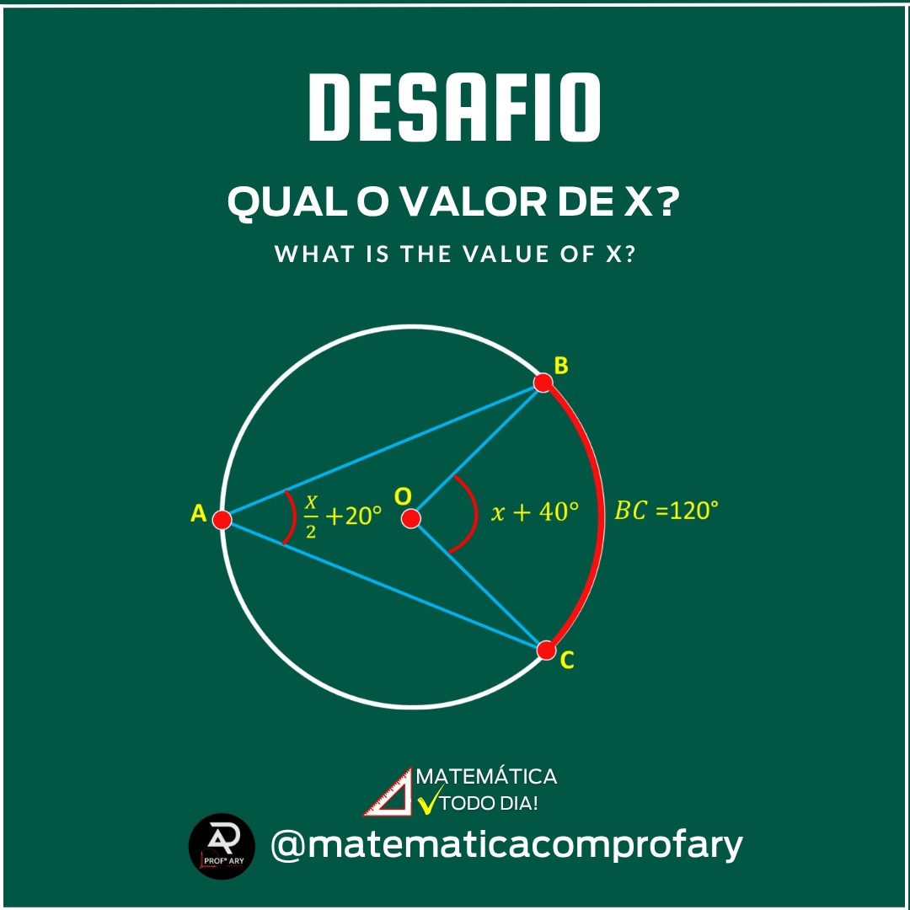
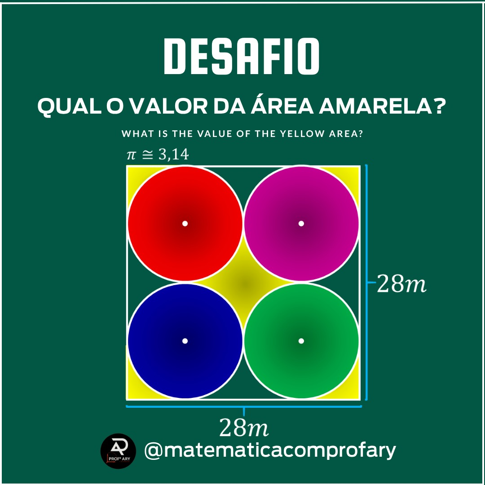
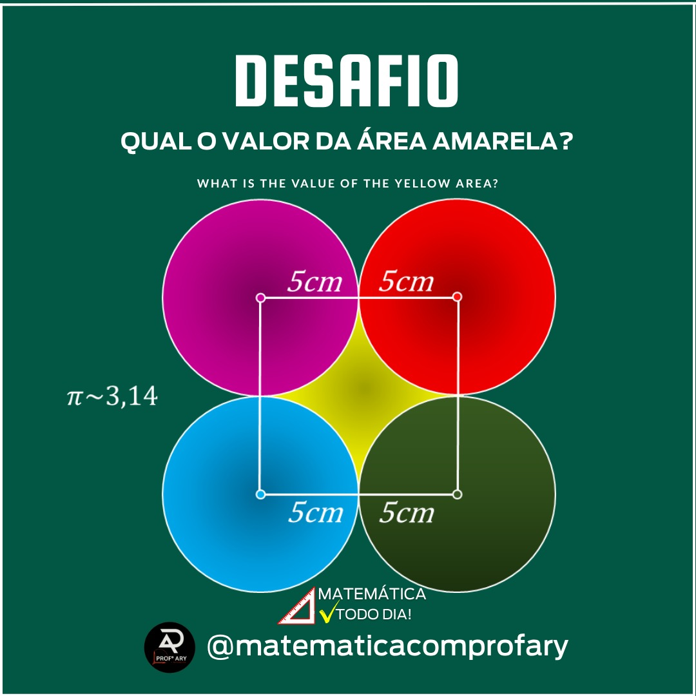
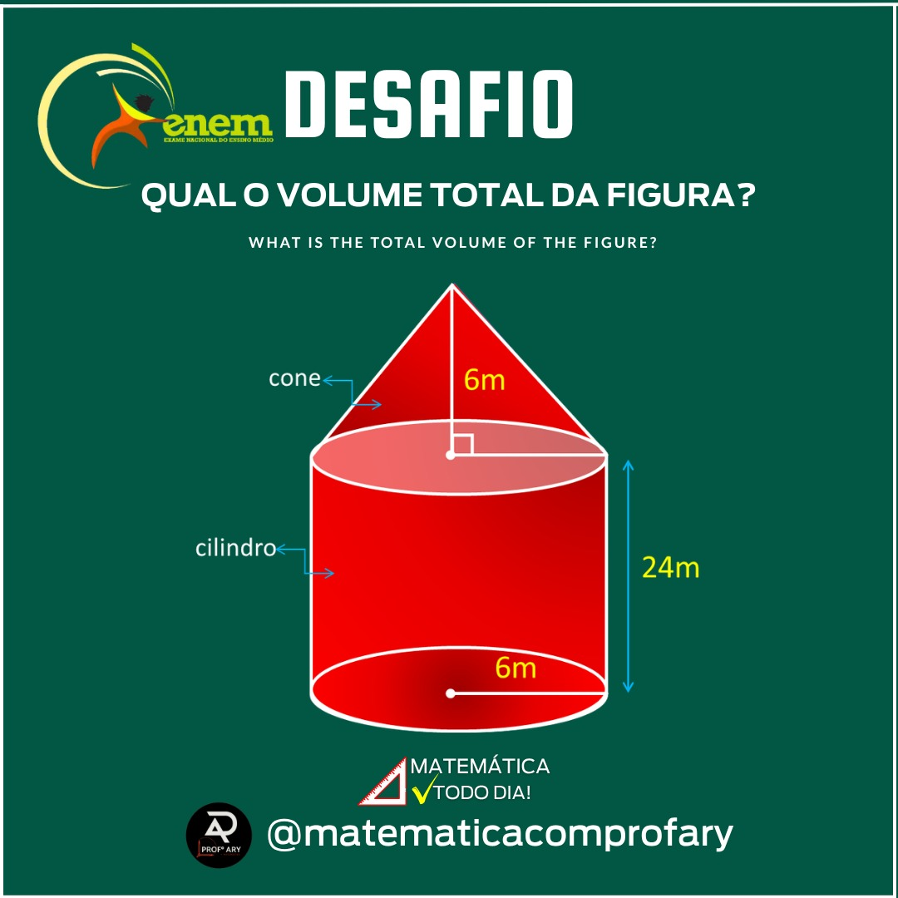
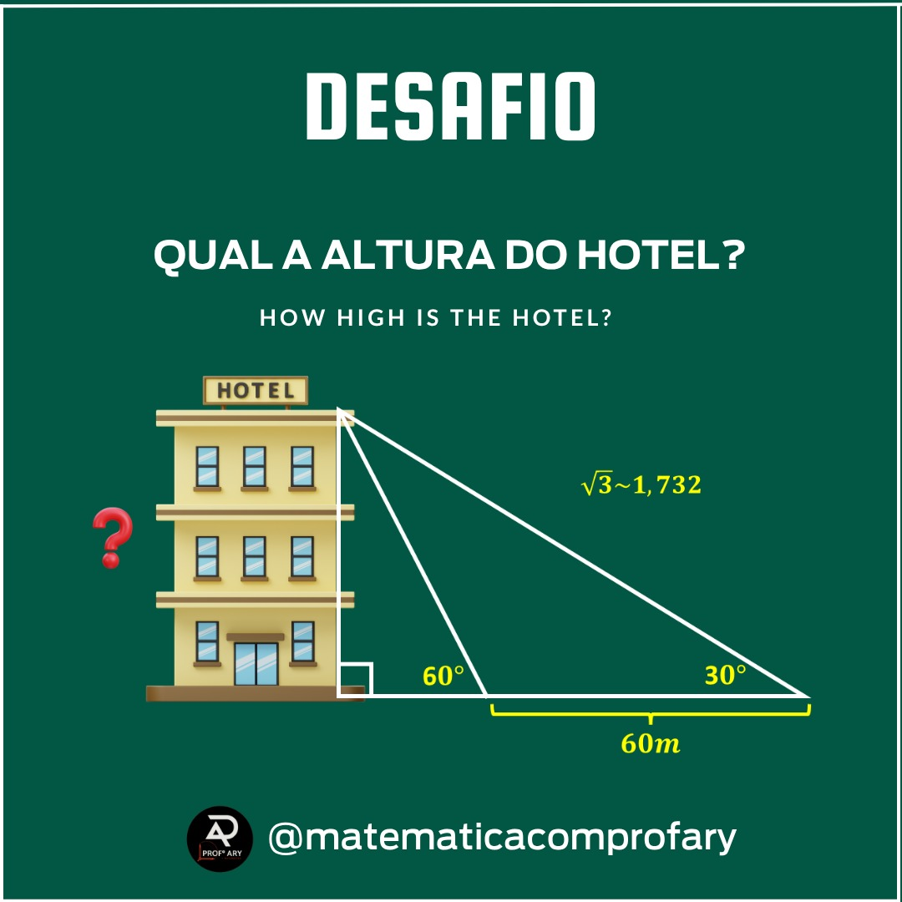
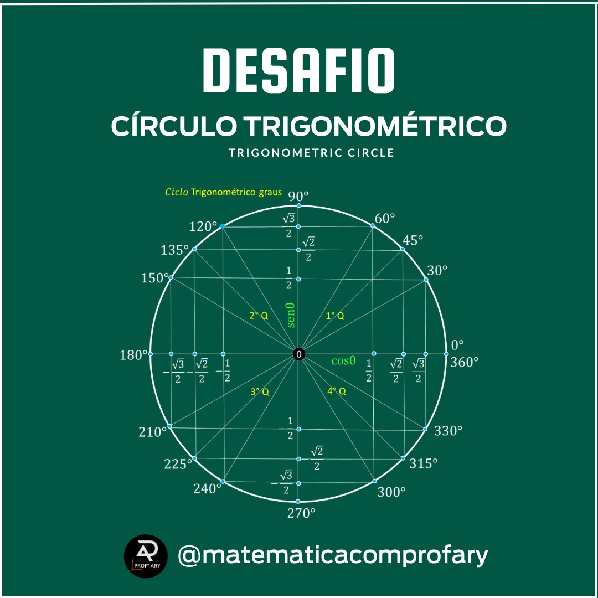
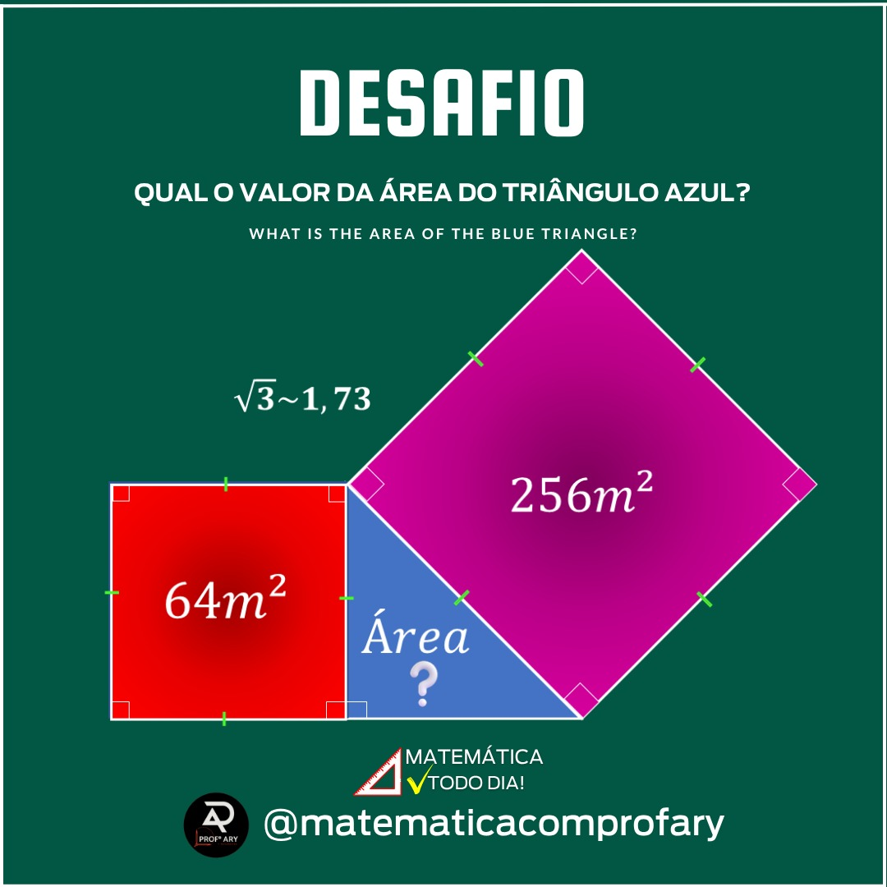
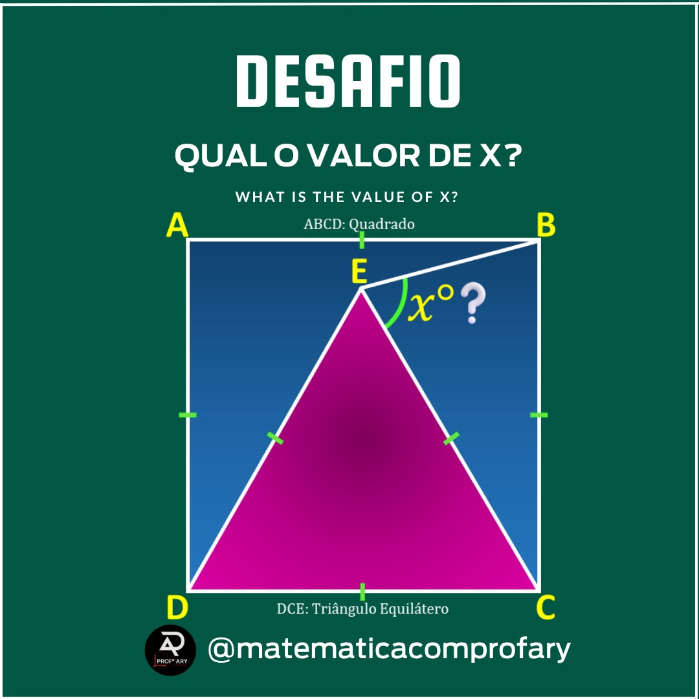
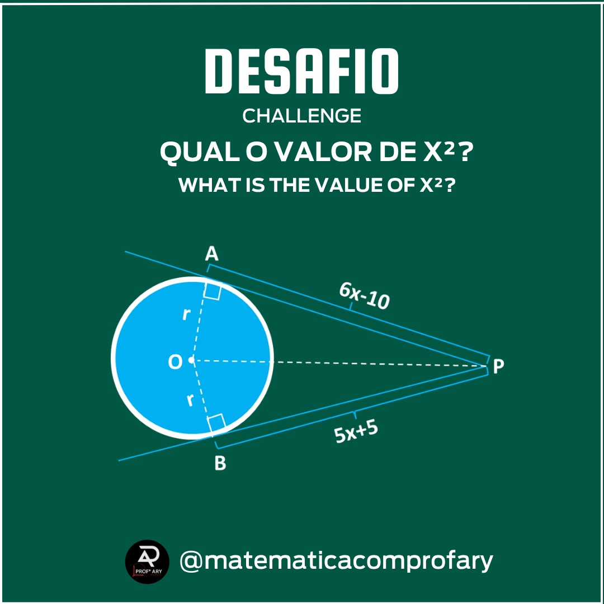

Método
Um passo a passo estratégico, cronológico e focado nos temas que realmente caem na sua prova.
MVA · Método do Prof. Ary
Visual, direta ao ponto e sem enrolação.
Aprenda matemática do jeito certo, sem complicação e no seu ritmo. Com o passo a passo do Professor Ary, você entende a matéria de verdade, tira nota alta na escola e alcança mais de 800 pontos no ENEM — mesmo se achar que matemática não é para você.
O DESAFIO que viralizou no Instagram: Qual o valor de x? Descubra lá embaixo. 👇
Você passa horas tentando estudar matemática, mas quando abre a prova do ENEM ou do colégio, parece que está lendo outra língua?
Você não é o único. O modelo tradicional de ensino foca em lousas cheias de letras apagadas, decoreba de fórmulas e explicações monótonas de uma hora. O resultado? Bloqueio mental, notas baixas e a falsa crença de que você "é de humanas".
O problema nunca foi a sua capacidade. Foi a forma como te ensinaram.
A solução
Um treinamento completo focado na engenharia reversa das grandes provas. Unindo a proximidade da câmera com explicações desenhadas milímetro a milímetro, o método transforma conceitos abstratos em esquemas visuais simples de entender.
Um passo a passo estratégico, cronológico e focado nos temas que realmente caem na sua prova.
Cores, gráficos e construções geométricas dinâmicas para você ativar sua memória fotográfica e ganhar tempo.

O fim da decoreba. Você aprende o raciocínio por trás do cálculo para conseguir resolver qualquer questão inédita.
Mão na massa
Mude os números abaixo e veja, ao vivo, a matemática básica que cai o tempo todo no ENEM. É exatamente essa lógica — visual e sem mistério — que você vai dominar no curso.
No módulo 0 você aprende o MMC visual para somar e subtrair frações sem decorar regra nenhuma.
Toda porcentagem é uma fração de denominador 100 — por isso o Módulo 0 ensina os dois assuntos juntos.
Exemplo direto (a está para b, assim como c está para x). No curso você aprende a identificar quando a regra é direta ou inversa antes de montar a conta.
O mesmo raciocínio passo a passo (isolar x) é usado depois em funções e geometria — é a base de tudo.
Desafio @matematicacomprofary
No vídeo, o Prof. Ary propõe uma torre infinita de potências:
Qual é o valor de x? Parece assunto de faculdade, mas a resolução usa só uma propriedade de potência e uma equação do 1º grau — o mesmo raciocínio do Módulo 0 e do Módulo 2 do MVA, explicado passo a passo e de forma totalmente visual.
Ver em qual módulo isso caiGrade curricular
Cinco módulos, do zero absoluto ao estilo de prova do ENEM.
Frações, porcentagem, equações do 1º grau e a famosa Regra de Três sem mistérios.

Estatística (Média, Moda e Mediana), Probabilidade e Análise Combinatória.

Função de 1º e 2º grau e Logaritmos explicados de forma totalmente gráfica.

Cálculos de áreas e volumes sem precisar decorar dezenas de fórmulas.

Resolução passo a passo dos padrões de questões que o ENEM repete todos os anos.
Direto do Instagram
Uma amostra do estilo de conteúdo que o Prof. Ary publica todos os dias — arraste para o lado.




Quem é o Prof. Ary
Com mais de 29 mil seguidores no Instagram e quase 300 mil visualizações mensais, o Professor Ary se tornou referência na internet por traduzir a matemática complexa em pílulas simples de resolução prática. Agora, toda essa didática está organizada em um ecossistema fechado para acelerar a sua aprovação.
Acesso completo aos 5 módulos do MVA por 365 dias, para rever quantas vezes precisar.
Inscreva-se no MVA hoje. Assista às aulas de Matemática Básica, baixe os materiais e teste a metodologia. Se em até 7 dias você achar que o curso não é para você, basta solicitar o reembolso na plataforma e eu devolvo 100% do seu dinheiro. Sem perguntas, sem burocracia e continuamos amigos.
Perguntas frequentes
O acesso é enviado imediatamente para o seu e-mail assim que o pagamento for aprovado pela Hotmart/Eduzz.
Por 1 ano inteiro (365 dias). Você pode rever as aulas quantas vezes quiser.
Sim! O curso começa na Matemática Básica do zero absoluto para recuperar toda a sua base perdida.
Sim, temos uma área exclusiva de membros abaixo de cada vídeo onde o Prof. Ary responde suas perguntas.
Comece hoje pelo Módulo 0 e chegue no dia da prova sem medo do enunciado.
QUERO DESTRAVAR MINHA NOTA EM MATEMÁTICA